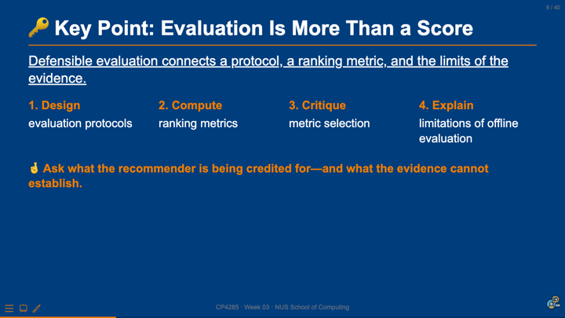

Neural Recommendation Models
CP4285 Modern Recommendation Systems — Week 04 
soc-n.us/cp4285-t2610-w04
01 Sep 2026
01 From Evaluation to Model

Last Week’s Pre-Lecture Exercise
Canvas discussion board · submitted by Mon, 31 Aug · 23:59 SGT
Use the responses as a constraint on today’s models: richer capacity can learn a more flexible interaction function, but it cannot recover information that the system never recorded.
Week 04: Neural Recommendation Models
A neural recommender does not replace the evaluation contract. It replaces a fixed interaction rule with a learned function of the representations and evidence available to it.
Note
Today: compare latent-factor and neural interaction functions, reason about implicit-feedback training, and ask when a model’s score is not yet an explanation.
Learning outcomes
Build
Describe a neural recommender as embeddings, an interaction function, and a training objective.
Compare
Contrast a latent-factor dot product with a learned non-linear interaction function.
Interpret
Identify what implicit feedback supports—and what an unobserved interaction cannot prove.
Critique
Assess whether a performance claim, explanation, and safeguard are aligned.
02 Learning an Interaction Function
🔑 Key Point: Neural capacity changes the interaction function
🔑 Embeddings say what a user and item are like; the interaction function says how their match becomes a score.
1 · Represent
Learn a vector for each user and item from available signals.
2 · Interact
Use a dot product or a neural network to combine the vectors.
3 · Learn
Adjust parameters against an observed training signal and its assumptions.
More expressive does not mean more informative: the model still learns from the evidence that enters its loss.
A latent-factor baseline fixes the interaction rule
For a user vector (_u) and item vector (_i), matrix factorisation commonly scores a pair by:
\[\hat{y}_{ui} = \mathbf{p}_u^\top \mathbf{q}_i\]
What the embeddings learn
Dimensions that help place users and items so compatible pairs receive a high inner product.
What stays fixed
The rule that combines the vectors: dimension-wise agreement is summarised by one dot product.
Neural collaborative filtering learns the match
\(\mathbf{p}_u\)
\(\mathbf{q}_i\)
\(f_\theta(\mathbf{p}_u,\mathbf{q}_i)\)
Neural collaborative filtering replaces the fixed inner product with a neural architecture that can learn an interaction function from data.
Note
The model is still collaborative filtering when its central evidence is the pattern of user–item interactions; additional features can be added, but they are a separate modelling choice.
Three related interaction choices
GMF
Generalised matrix factorisation preserves an element-wise interaction pathway before prediction.
MLP
Concatenates embeddings and learns layered non-linear transformations before prediction.
NeuMF
Combines the generalised matrix-factorisation and MLP pathways in a shared prediction model.
To think about
If two models use the same interaction log, what new evidence does a deeper interaction function add—and what does it only rearrange?
🎰 Bandit Time: What changed in the neural model?
Compared with a latent-factor dot product, what does an MLP interaction layer primarily change?
TempoQuiz debrief: capacity is not observability
Overclaim
“The neural model saw that the user disliked the item because there was no click.”
Defensible claim
“Given the recorded training signal and features, the model assigned this pair a low score.”
03 Training from Implicit Feedback
An interaction log is evidence, not a complete label set
Observed positive signal
A play, purchase, save, or other recorded action can be used as evidence of an interaction under a stated task definition.
Unobserved pair
No recorded action does not, by itself, separate non-exposure, inattention, friction, and lack of interest.
A training objective turns interactions into pressure on scores
\[\mathcal{L}(\theta) = - \sum_{(u,i) \in \mathcal{D}} \left[y_{ui}\log \hat{y}_{ui} + (1-y_{ui})\log(1-\hat{y}_{ui})\right]\]
Choose \(\mathcal{D}\)
Specify which user–item pairs enter training and how they were selected.
Define \(y_{ui}\)
State what counts as a positive target and what construction supplies comparison pairs.
Interpret \(\hat{y}_{ui}\)
Treat the score as model output under those choices—not a direct measurement of preference.
👥 Small-group discussion: What should the model be allowed to learn?
A streaming service trains on completed plays and treats unplayed recommendations as comparison pairs. Name one plausible pattern the model may learn and one ambiguity it cannot resolve.
In groups of three: prepare a two-sentence response. Sentence one names a useful prediction pattern; sentence two names the exposure, interface, or preference assumption that limits the claim.
From model score to decision requires a second layer of choices
Estimate a pair under the training objective
Apply constraints, diversity, and business rules
Place items in a particular interface and context
A score is an input to a recommendation decision; it is not the decision, the explanation, or the user impact.
04 Explanation, Evidence, and Safeguards
A high score is not yet a user-facing explanation
Prediction
“This pair received a high score under the model and input features.”
Explanation
“Here is an intelligible reason for the recommendation, appropriate for a user or system designer.”
Justification risk
A plausible story can sound causal or personal even when it does not reflect the full ranking decision.
Note
Explainable recommendation can use post-hoc explanations or models designed to expose understandable reasoning. Either approach should be evaluated for faithfulness, usefulness, and possible harms.
Ethics thread: a reason shown to a user is a product claim
Warning
A polished “Because you liked…” explanation may conceal that the item was selected after multiple ranking rules, inventory constraints, paid placements, or exposure effects. Do not present a partial signal as a complete account of preference or causation.
Check faithfulness
Does the explanation correspond to a meaningful contributor to the served recommendation?
Check consequences
Could the framing overstate certainty, reveal sensitive inferences, narrow discovery, or mislead a user about control?
👥 Evaluate this explanation
A music app says: “Recommended because you love acoustic folk.” The item was also boosted for a new-release campaign and appears in the first visible slot. What should the explanation disclose, revise, or avoid?
In groups of three, prepare one revised explanation and one evidence or design check. Be ready to say how the revision avoids overstating the model’s certainty or hiding the ranking context.
Before deployment: document the boundary of the claim
| Question | Minimum documentation | Why it matters |
|---|---|---|
| What did the model learn from? | Interaction window, target event, features, and treatment of unobserved pairs. | Clarifies the evidence behind the score. |
| What decision uses the score? | Candidate set, ranking policy, constraints, and interface placement. | Separates modelling from product delivery. |
| What is communicated to users? | Explanation text, known limitations, and evaluation checks. | Prevents persuasive wording from becoming an unsupported claim. |
Summary
🔑 Neural capacity can improve the score function; it does not replace evidence, evaluation, or accountability.
1 · Learn the interaction
Embeddings represent users and items; matrix factorisation fixes a dot product while neural collaborative filtering learns a richer interaction function.
2 · Keep the target explicit
Training requires a declared dataset, event definition, and treatment of unobserved pairs. A non-click remains ambiguous.
3 · Separate score from delivery
A model score enters a ranking policy and interface; it is not the complete product decision or user impact.
4 · Test explanations too
A user-facing reason should be intelligible, appropriately limited, and evaluated for faithfulness and consequences.
A more complex model can learn more patterns; a responsible system still states what those patterns support.
Canvas discussion board · post before Mon, 07 Sep · 23:59 SGT
Write 120–160 words. Give one concrete next-item prediction for each sequence and name one potential engagement or user-welfare trade-off.
A static user embedding can summarise a history. A sequence model asks how order, recency, and session context change the next useful recommendation.
- represent a changing sequence of interactions;
- predict the next item or action; and
- inspect when engagement objectives conflict with user goals.
A sequence, not a bag
Browse laptop
→ Compare reviews
→ Save accessories
What should appear next—and why?

CP4285 · Week 04 · NUS School of Computing